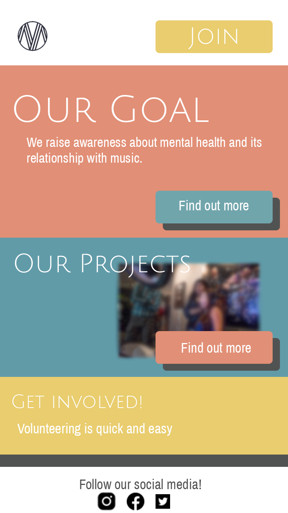
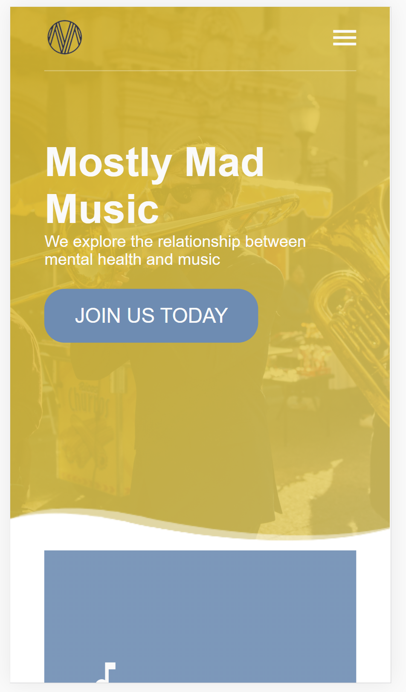
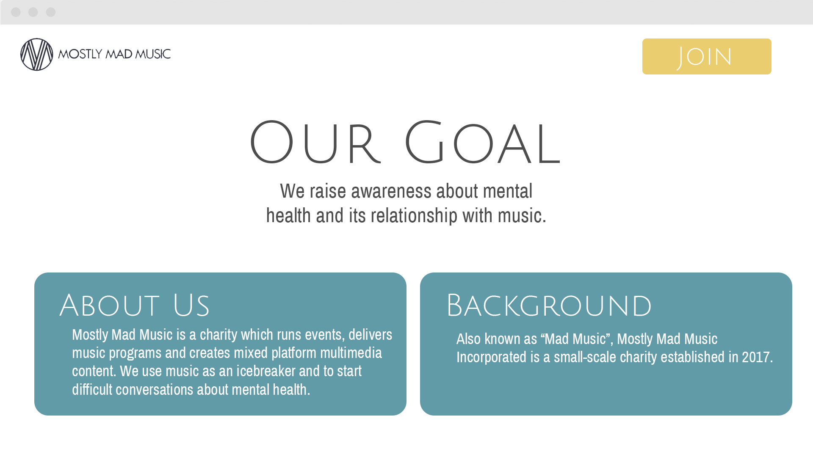
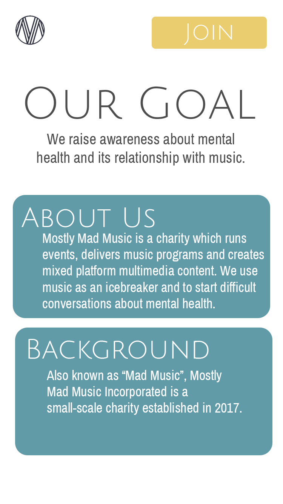
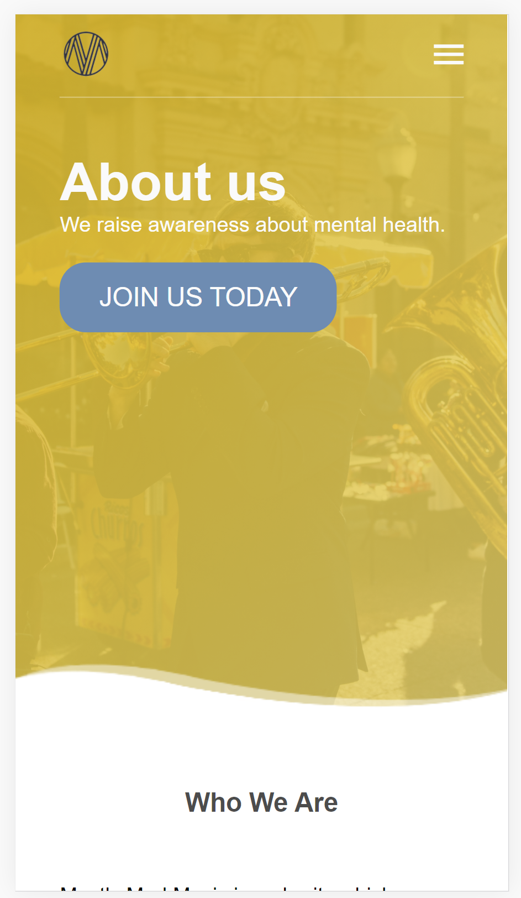

Landing Page Iteration and Explanation
Desktop

The mockup of the landing page (pictured above) show the initial iteration of the website’s landing page. Below is the final desktop landing page.

Main Iterations
- Original mockups seemed a bit to clustered in a grid like layout. The final iteration of the webpage changed this by separating parts of the website into distinct sections.
- Each section is contrasted greatly, not only by contrast by the colour of the background, but each section is also divided by a wavy line. This was stylistically chosen as “the majority of curved lines suggest relaxation… easy on the eyes and are interesting to follow… they feel very organic.” (Cox, 2011).
- Colour choices were toned back from the original mockups, and instead fell back to the predominant colours of the company, that being yellow
- Mockups did not include a horizonal navigation bar, I made sure that in the web prototype that a navigation bar was included at the top
- The main call to action button is now situated just underneath the top main message text
Mobile
The mockup of the landing page (pictured above) show the initial iteration of the website’s landing page. Below is the final mobile landing page
Main Iterations
- Maintained contents of page flowing down vertically
- Waves separating sections much like the desktop landing page
- Information spread out more down the page, similar to the desktop, but this was done to alleviate the cluster the information
Key Annotations for Desktop and Mobile
- The idea to iterate the original mockups landing page into more distinct sections was to provide a cleaner viewing experience for the viewers; providing more breathing room for the eyes, rather than a cluster
- On a website that’s trying to invite users to join them, using the curved lines as a method to instill “relaxation” provides a more friendly experience of the website
- Going back to a predominant colour of yellow was not only a decision to revert back to company colours, but in colour psychology, yellow is often associated with laughter, hope and sunshine
- Having information spread out on the phone not only makes it more digestible to read, but the ergonomics and vertical nature of scrolling down on a phone suits this more
- Having a picture behind, adds an active and dynamic feel to the website
About Page Iteration and Explanation
Desktop
Desktop
The mockup of the about page (pictured above) show the initial iteration of the website’s about page. Below is the final desktop about page.

Main Iterations
- The top main text is now aligned to the left. This iteration was purely done, to stay consistent with the flow of the landing page
- The mockup shows the main content of the page separated into different categories across the page. This was however changed as multimedia was added
Mobile
The mockup of the about page (pictured above) show the initial iteration of the website’s about page. Below is the final mobile about page.
Key Annotations
- Most iteration changes were done in order to create consistency between all the pages
- Multimedia video scales down on phones screen as to keep in line with all of the text.
- The project page and join page follow similar theories applied to the about page
References
- Cox, J. (2020). Build a Complete Responsive Website | HTML and CSS Tutorial [Image]. Retrieved from https://www.youtube.com/watch?v=j_Xa7Kn59Es&t=1625s
- Cox, P. (2011). Communication, Mood and Meaning: Lines in Web Design. Retrieved 26 November 2020, from https://tympanus.net/codrops/2011/11/17/lines-in-web-design/
- Ed, D. (2019). https://www.youtube.com/watch?v=ZeDP-rzOnAA [Image]. Retrieved from http://Build A Responsive Website With HTML & CSS Tutorial
- Panretta, M. Man Playing Guitar [Image]. Retrieved from https://unsplash.com/photos/kyN9SE1Wq0U
- Pierce, E. Man Playing Trumoet [Image]. Retrieved from https://unsplash.com/photos/sx2irIwt9Jw